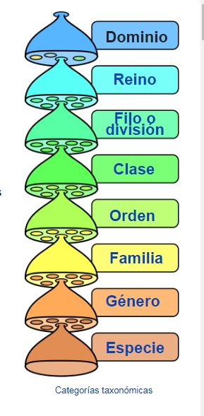
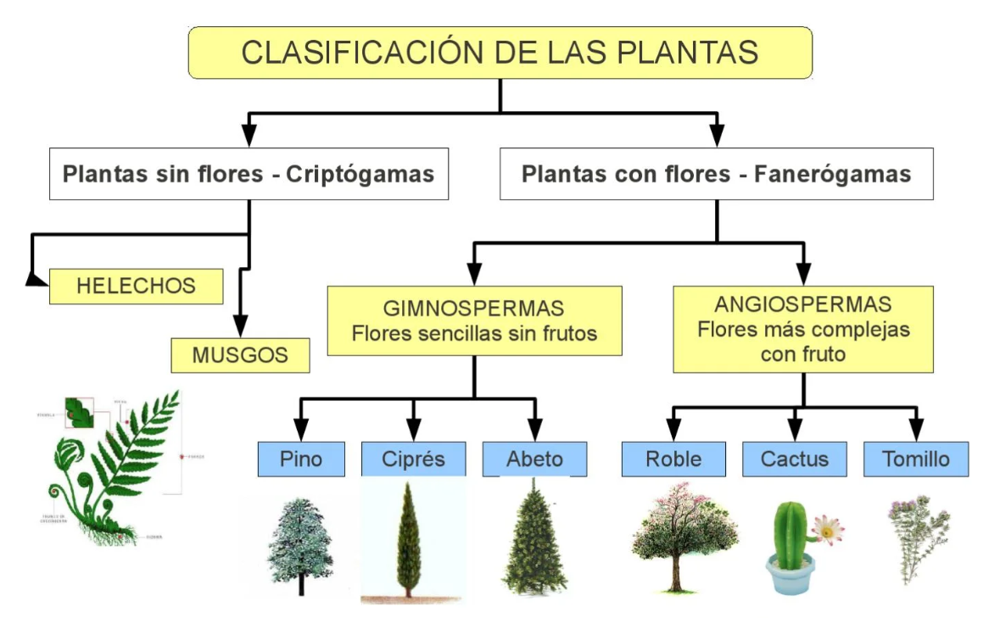
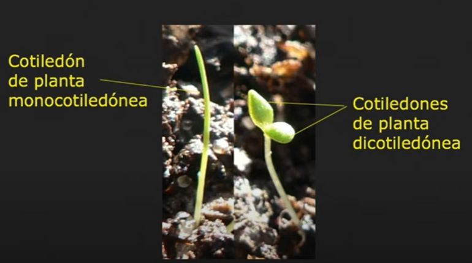
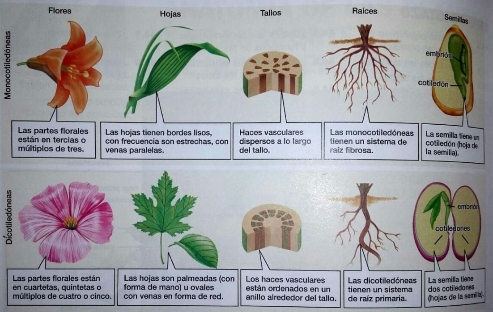

FA_UD1_Identificación de especies vegetales
FUNDAMENTOS AGRONÓMICOS
UD 1
IDENTIFICACIÓN DE LAS ESPECIES VEGETALES
TAXONOMÍA VEGETAL
Concepto
La Taxonomía es la parte de La biología que se ocupa de la clasificación u ordenación de los organismos, así como normas que regulan dicha clasificación.
Las plantas se ordenan en distintos grupos o categorías taxonómicas de acuerdo con las afinidades que presentan. Las divisiones taxonómicas son: reino, división, clase, orden, familia, género y especie.
| Pino Canario | Manzano | |
|---|---|---|
| REINO: | Plantae | Plantae |
| DIVISIÓN: | Pinophyta | Magnoliophyta |
| CLASE: | Pinopsida | Magnoliopsida |
| ORDEN: | Pinales | Rosales |
| FAMILIA: | Pinaceae | Rosaceae |
| GÉNERO: | Pinus | Malus |
| ESPECIE: | Pinus canariensis C.Sm | Malus domestica Borkh |
{width=50%}
La especie se nombra utilizando la nomenclatura binomial que es un nombre latín que se escribe en cursiva y consta de dos partes, el primero es el género y el segundo la especie. Los nombres científicos siempre se escriben en latín y en cursiva.
Clasificación de las plantas
{width=50%}
Monocotiledóneas y dicotiledóneas
- CRIPTÓGAMAS: son plantas que no tienen semillas, flores ni frutos y se reproducen por esporas. Por ejemplo algas, musgo y helecho.
\Begin{figure} \centering \subfigure[algas]{\includegraphics[width=0.3\linewidth]{./imgFun/UD1_image4.png}} \subfigure[Musgo]{\includegraphics[width=0.3\linewidth]{./imgFun/UD1_image5.png}} \subfigure[Helecho]{\includegraphics[width=0.3\linewidth]{./imgFun/UD1_image6.png}} \caption{Plantas sin semillas} \End{figure}
- FANERÓGAMAS: son plantas que tienen flores. Es el grupo de plantas más evolucionado y el más importante para el ser humano. Se clasifican en:
- Gimnospermas: plantas leñosas (árboles o arbustos) con hojas en forma de agujas o escamas, son perennes. No producen verdades flores, por lo tanto no producen frutos. La polinización se realiza generalmente por el aire. Ej. pino, abeto, ciprés, enebro.
\Begin{figure} \centering \subfigure[Cupressus sempervirens (ciprés común)]{\includegraphics[width=0.3\linewidth]{./imgFun/UD1_image7.png}} \subfigure[Piña]{\includegraphics[width=0.3\linewidth]{./imgFun/UD1_image8.png}} \subfigure[Pinus canariensis (pino canario)]{\includegraphics[width=0.3\linewidth]{./imgFun/UD1_image9.png}} \caption{Ginospermas} \End{figure}
- Angiospermas: plantas que pueden ser herbáceas o leñosas con hojas anchas, semillas, flores y frutos. Estas se dividen en dos clases:
\Begin{figure}
\centering
\subfigure[Melocotón]{\includegraphics[width=0.3\linewidth]{./imgFun/UD1_image10.png}}
\subfigure[Maiz]{\includegraphics[width=0.3\linewidth]{./imgFun/UD1_image11.png}}
\subfigure[Tomate]{\includegraphics[width=0.3\linewidth]{./imgFun/UD1_image12.png}}
\caption{Angiospermas}
\End{figure}
- Monocotiledóneas: tiene un solo cotiledón: maíz, cebolla, arroz, palmeras…
- Dicotiledóneas: la semilla tiene dos cotiledones (primeras hojas del embrión): melocotón, toamate, manzana, naranja…
{width=50%}
\Begin{figure} \centering \subfigure[Fig1]{\includegraphics[width=0.4\linewidth]{./imgFun/UD1_image14.jpg}} \subfigure[Fig2]{\includegraphics[width=0.4\linewidth]{./imgFun/UD1_image15.jpg}} \caption{Dicotiledóneas} \End{figure}
{width=50%}